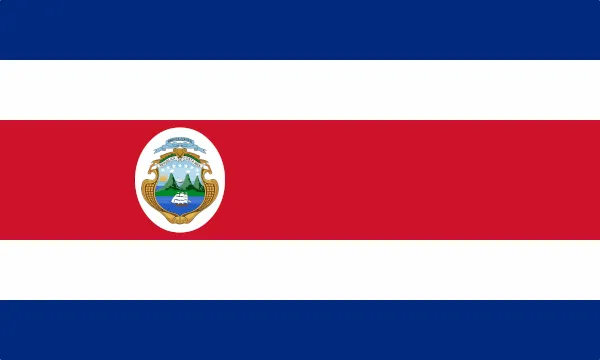
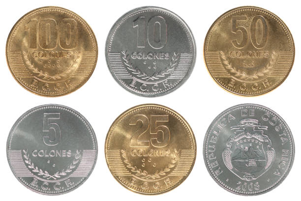

Este país da América Central está entre a Nicarágua ao norte e ao sul do Panamá. Sua área ligeiramente superior ao de Vermont e New Hampshire combinados. Tem uma região do Pacífico estreita faixa costeira. Cocos Island (10 sq mi; 26 km ²), a cerca de 300 milhas (483 km) ao largo da costa do Pacífico, está sob a soberania da Costa Rica.
| A bandeira da Costa Rica é composta por três cores. A cor azul, que representa o céu, simboliza a perseverança do povo costa-riquenho, já a cor branca simboliza a paz e, por fim, a cor vermelha representa as batalhas ocorridas no país, principalmente durante o seu processo de independência. |
 |
País unitário. A divisão político-administrativa divide o país em sete províncias subdivididas em 81 cantões e, esses, em 470 distritos. A Assembleia Legislativa é Unicameral, e está formada por 57 membros diretamente eleitos por 4 anos. Os membros titulares não podem ser reelegidos imediatamente.
A administração de cada cantão está a cargo do governo municipal. As municipalidades de cada cantão ou governos locais estão encabeçadas pro alcaldes (prefeitos); quem, de acordo com o artículo 169 da Constituição Política, é um funcionário executivo, que desde 2002 é eleito (Art 14. Reforma dos artigos 14, 17 e 20 do Código Municipal, Lei Nº 77.794, de 30 de abril de 1998 e suas reformas). Além disso, existem dois vice-alcaldes que, entre outras funções, substituirão o alcalde municipal no caso de sua ausência, temporária ou definitiva. No âmbito legislativo está o Conselho Municipal, cujos integrantes são as e os regidores (vereadores) e seus suplentes, com voz e voto.
Alcaldes eleitos por maioria relativa (Código Eleitoral, art. 202). Regidores e integrantes dos Conselhos de Distrito e Conselhos Municipais são eleitos por representação proporcional (Código Eleitoral, art. 201) mediante a fórmula eleitoral de quociente e subquociente. A Assembleia Legislativa tem seus membros eleitos em sistema proporcional, em lista fechada. Os partidos que tenham alcançado o quociente requerido têm direito à distribuição dos assentos. Os assentos vacantes restantes sobre a base do sistema de quociente se distribuem entre os partidos na ordem de seus votos residuais. Os partidos que não alcançam o subquociente também são levados em conta, seus votos são tratados como votos residuais. O voto é obrigatório.
Sendo dependente do turismo, a economia da Costa Rica, agricultura e exportações, sua economia emergiu de uma recessao em 1997. Sua moeda é o colón costarriquenho.
A economia tem melhorado significativamente na Costa Rica porque o governo implementou um plano de sete anos destinado à expansão da indústria de alta tecnologia. Existem isenções fiscais para os investidores que quiserem investir no país. Com o seu nível elevado de residentes formados, a Costa Rica é um local de investimento atraente. Várias empresas globais de alta tecnologia já se instalaram na área e os bancos do país são estatais.
A Costa Rica conta com maior superfície marítima que continental dado que a zona oceânica é de 500 000 km² aproximadamente, que inclui a Ilha do Coco a qual está situada a uns 480 km ao sudoeste da Península de Osa, na costa do Oceano Pacífico. Esta ilha foi declarada Patrimônio Natural da Humanidade pela UNESCO no ano de 1997. Os bosques da Costa Rica possuem ricas reservas de ébano, balsa, caoba e cedro, além de carvalho, ciprestes, manglares, helechos, guácimos, ceibas e palmas. O país conta com mais de mil espécies de orquídeas, sendo Monteverde (no centro do país) a região com mais densidade de orquídeas do planeta. Ao todo a Costa Rica abriga mais de 10 mil espécies de plantas.Cerca de 38% da superfície total do país encontra-se coberta de bosques e selvas e 25% do território encontra-se protegido. A Costa Rica é o país com maior variedade de flora e fauna de toda a América Central. Abundam os animais selvagens como a suçuarana, a onça-pintada, o veado, o macaco, o coiote, o tatu e umas 850 espécies de aves entre as que destacam o quetzal, o jilquero e o colibri. A Costa Rica dá refúgio a: 232 espécies de mamíferos, 850 espécies de aves, 183 espécies de anfíbios, 258 espécies de repteis e 130 espécies de peixes de água doce.